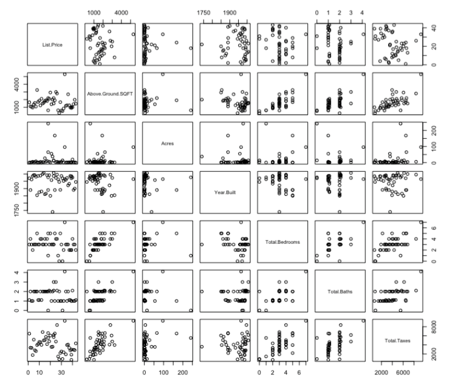
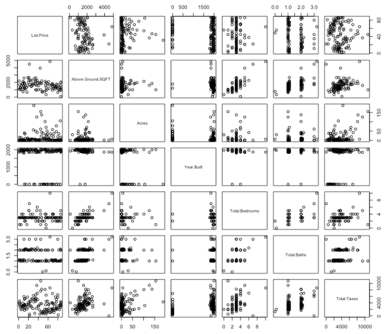

Logistic Regression Modeling of Real Estate Properties
Jun 16, 2016I was recently tasked with discovering some additional information from a set of housing data in the upstate New York region that could help elucidate why some properties sell over others. Given two csv files with data from active and sold properties, I immediately thought how cool it would be to build a predictive model using logistic regression! I built the whole thing in R, too, which gave me more experience with the software, and surprised me in its simplicity and power. I was limited by my dataset, as it was not as large as I would have hoped for, but nevertheless, I got right down to work.
Data Data Data…
Given the data for a particular region (where there is no need to filter the properties as the location variable is the same) I had a csv of the properties that have sold and another one detailing the properties that remain active. The relevant characteristics of the properties were – market price, address, days on market, square footage, acres of lot, year built, bedrooms, baths, and yearly property taxes.
Dimensionality Reduction
To build my model, it was vital to understand which variables (the characteristics of the properties listed above) contributed towards the likelihood of the property being sold (for example, is a property with higher taxes than another home close by, controlling for similarity in price and size less likely to sell?). Therefore, I did a prior examination of these relationships (essentially a dimensionality reduction, where the variables that were uncorrelated are determined as not being essential and thus omitted from the eventual model). R allows you to quickly do a scatter plot matrix of all pair-wise combinations of the variables. Having a horizontal or vertical slope was clear indication of this.

Relation of variables of active properties: Horizontal and vertical slopes can be ruled out as having no effect on outcome, in preparation for our model.
Active Properties - The variables (in this case, market price, above ground square footage, acres, year built, bedrooms, bathrooms, and, total property taxes) can be found in a diagonal line from top left to bottom right. Each variable is then plotted against each other. For example, the first square in the second column next to the list price square, is an individual scatterplot of market price and above ground square footage, with price as the X-axis and above square footage as the Y-axis.
In essence, the boxes on the upper right hand side of the whole scatterplot are mirror images of the plots on the lower left hand. In this scatterplot, we can see that there are correlations between price and taxes; year built and taxes; square footage and taxes; because the plot shows a slight slope of the lines. With a slope of zero, we have a horizontal line which indicates that there is no relationship between the variables. We see this with price and acres; square footage and acres; acres and year built; acres and taxes; bedroom count and price; square footage and bathroom count; and in in several other places as well. We also see some vertical lines, which are problematic as they indicate that there is no change in x. Thus our formula is undefined due to division by zero. Some will term this condition infinite slope, but be aware that we can’t tell if it is positive or negative infinity.
Lastly, there are ambiguous or weak correlations between variables. In this case, it would be important to continue with further with additional statistical analyses and preferably a larger dataset to confirm or deny any relationships. In essence, we can remove acres, bedrooms and bath count from our logistic regression model. However I must make note that these results could also be as a result of discrete variables being visualized in a scatterplot, so as usual, further analysis is needed.
Sold - Similarly as with active properties, examining the prior relationships between variables is vital, so we can rule out any potential extraneous variables in our model. Looking at the figure underneath, it is apparent that there is far more activity occurring with this dataset (which is expected as the dataset was larger). There also are interesting apparent correlations between price and square footage and taxes and square footage, relationships that were overlooked or not detectable with the active properties dataset. As previously, we see that discrete variables yield vertical slopes and horizontal slopes which are indicative of the absence of a relationship at the moment, but I should mention that there could be the possibility of lurking variables.

Relationships between the variables of sold properties: We can rule out those variables that appear to have no effect, so we can know what variables will be more significant for the logistic model.
The model
I tested the model for multiple predictors along with their interactions.
Above Ground Square Footage + Price + Total Taxes: Testing these multiple predictors to see whether we can reject the null hypothesis (that there is no relationship between the variables) yielded a p-value of 0.00721, which indicates that this is statistically significant and unlikely to have happened purely by chance. For a few prices of the 100,000 range, a single unit change in property taxes increased the log odds of a property being sold by 3.180E-01. For homes where the log odds are sharp, it could be possible that the market price of the home does not coincide with its value. Higher priced properties had a higher log odds of being sold when there was a one unit change in square footage, which is logical.
Another relationship is between taxes and square footage, increasing the log odds of a property being sold as they both change in one unit. The decreases in the log odds of properties being sold were seen with properties in the lower price range with a single unit change in taxes and square footage, -2.945E-04. This suggests that there is a boundary/threshold for square footage/property taxes that should not be crossed if a property is to be sold.
Price + Year Built: For this combination, we see that the null deviance (which is the deviance when x = 0) is 181.944 whereas the residual deviance is 58.669 on 48 degrees of freedom (number of observations - number of predictor values). For every one unit change in the year the property was built, the log odds of the property being sold decreases by -9.907E -04, which signifies that as price and age increase, the odds of a property being sold decrease.
Price + Total Taxes: For every one unit of change of yearly total taxes, the log odds of a property being sold increases by 6.092E-04, but it ultimately depends on the price, as there are wide variations even for similar prices, indicating that there could be some property taxes that surpass the value inferred by market price.
Price + Days on Market: With one unit change in days on market (1 day); the log odds of a property being sold decreases by -4.078E-03. With a lower residual deviance than null, we can say that there is an effect of the days on the market on the property being sold, with those being on the market longer having the odds decrease. Across the board, when this occurred, it appears potential buyers are less likely to want to purchase because with a single unit change in price, there is predominantly a decrease in the odds of selling.
Predicting
The usefulness of logistic regression modeling is that it can serve as a predictor to gauge the odds that a property will sell given the predictor variables mentioned above. Given the limited nature of the data, I nevertheless decided to run the predictor function created in R: predict(mylogit, type=”response”, newdata=newdata2) to determine whether it would correctly predict the selling of a property that was recently sold, but listed under the data as active.
The result was 1, which predicts that the property does have a significant odd of being sold given the interacting predictor variables. More data would be useful in determining the accuracy of the test data used in the model.
Further work
Further work would require a larger dataset that would allow for more specific filtering the data, allowing for more precise and models with higher accuracy. The ideal method for this filtering would be the algorithm k-nearest neighbor classifier, a popular machine learning technique used for classification. Implemented beforehand with the current dataset, it yielded specific subgroups that shared similar characteristics (for example, data was classified by price and acre of property).
However, given the limited amount of data, certain groups were vastly small in size (approx. 1-2) and odd in dimensions (2 data points for unsold versus 4 data points for sold) which was indicative that the use of this algorithm would be inefficient and likely to yield incorrect results. Given the limited dataset, the method used for dimensionality reduction was not as sophisticated as it could have been, which is something that would be greatly improved with larger datasets. In addition, for greater efficiency of these machine learning algorithms, it is important to have a large training dataset for properties unsold and sold so predictions can be higher in accuracy when working with data of active properties, where one may wish to determine why a property has remained on the market for x period of time.
This brings me to my last suggestion for another avenue for possible further work – having a spread-sheet of data of properties that were recently removed from being active; and to examine the model’s accuracy with it’s predictions. I am currently working on visualizing this data via the JavaScript library d3.js..